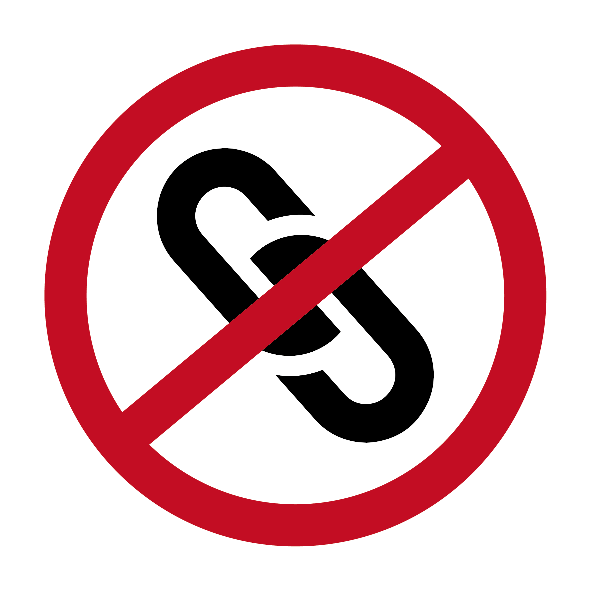
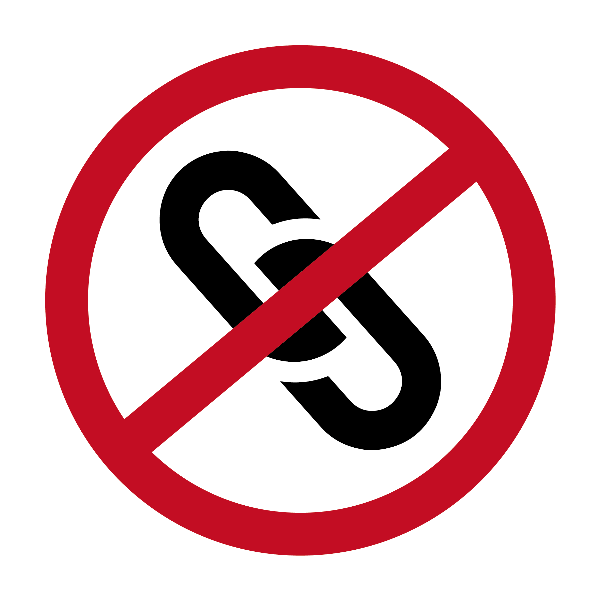

不用承擔責任
國中時，當時我因為處在叛逆期的狀態下，以及種種因素，我總是惹我阿姨生氣，甚至某天她直接對著我憤怒地大罵：「要不是因為你媽媽，我才不想照顧你！」這句話打從那時起，即深深地烙印在我心底。
儘管，現在想來，我知道那是氣話，但隨著與我家人長期的相處下來，我看見家中長輩照顧小孩子的種種辛酸與血淚。我徹底瞭解：生小孩不是一個嘴上說說的玩笑話；不是你進到自助餐想什麼就夾什麼，不想要的通通挑掉。生小孩是一條沒有回頭的路，當你選擇走在這條路上時，已經沒有其他岔路可以讓你選擇了。一旦你生了小孩，那麼他／她就是你的責任；不論如何，就是得要對他／她負責到底。
也因此，當我早早認清了生小孩的現實面，我越來越篤定「生小孩」不是我人生中的安排之一。加上我天生的個性極為注重自我、強調自由，以及太有責任感，我不願將我人生的大把時間揮霍在照顧另外一人身上。對我來說，在今生將自己照顧好，那才是我活著的核心價值。且正是因為瞭解了「責任」的重大與意義，更不願隨便承擔起沒有把握和無意願扛起的責任。

不用忍受疼痛與不適（僅限女性）
我們都在發展心理學的前半段學習到了卵子是如何與精子結合成為受精卵，而受精卵又是如何發展成胎兒，漸漸在母親的子宮裡安全地長大，並面臨生產。然而，課本裡唯一沒有寫到的，就是即將生產的孕婦是如何面對劇烈的撕裂的疼痛，而在這之後是如何安然無恙地持續生產後的休養。
懷孕不僅僅得忍受孕吐、腰酸背痛、牙痛、便秘、恥骨痛以及最後的分娩之痛，甚至在生產後，還有可能會罹患產後憂鬱症，我實在難以想像世界上所有自主選擇懷孕及生育的媽媽是如何克服種種生理及心理因素，即使有諸多後續會面臨到的障礙會讓自己想著「我到底為什麼要幹這種苦差事？」，仍然願意為了孩子好好地度過那難熬的九個月以及最後的臨盆，將孩子生下來。

不用花一堆錢

（上圖取自小資女艾蜜莉，〈養一個孩子要花多少錢？從出生到大學畢業，一次算給你看〉）
面對生小孩一個最需要面對的現實考量，就是「錢」。如果我們今天各各都是富二代，想錢錢來，那麼生小孩的各種花用那都不是問題。想要讓孩子盡情學習各種才藝、讓孩子盡情買各種他／她想要的東西，那都不是問題。問題在於，我們都不是有錢人，生孩子並不是件說生就生的易事，若是沒錢，我們該怎麼安心將孩子平安健康地養大到他／她成年？甚至讀大學以及就讀研究所？
要是今天賺不夠錢，或是中年破產，或是被人騙走幾百萬，那麼孩子該怎麼辦？沒錢養活自己那又該怎麼辦？
這世界上不是所有問題只要靠著愛情裡兩人彼此的互相扶持和堅定，就能夠解決所有阻礙。甚至有些家庭並非雙薪或是雙親家庭。沒錢就是沒錢，沒錢就別生小孩。若是要生小孩，就要確保有足夠的金錢能夠維繫小孩子的食衣住行，且更重要的是自己。自己都養不活就別養小孩。